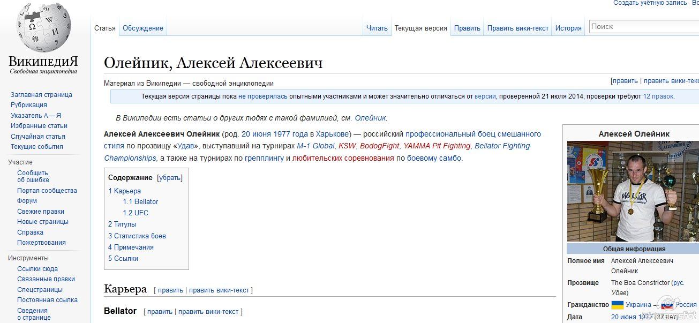
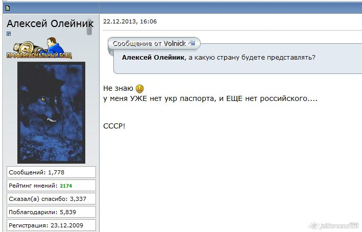

Спортсмен Алексей Олейник, который вышел на сцену в майке с Путиным, — не гражданин Украины
«Украинский спортсмен Алексей Олейник вышел на взвешивание перед боем Абсолютного бойцовского чемпионата (UFC) в футболке с Владимиром Путиным», — сообщил телеканал Russia Today.Эту информацию распространили ведущие российские медиа, делая акцент на украинской принадлежности спортсмена.
На самом деле уроженец Харькова Алексей Олейник выступает в российских чемпионатах и представляет Россию в международных соревнованиях, что подтверждает российская Википедия.Среди прочего, она сообщает, что он двукратный чемпион России.
В интервью изданию sports.ru 6 февраля 2014 года Олейник говорит:
«Я уже 7 лет живу в России, у меня здесь дом, супруга, трое детей ‑ зачем мне, если я живу здесь, другое гражданство?»
Отвечая на вопросы читателей mixforum.ru в декабре 2013 года, Алексей Олейник сказал, что у него уже нет украинского паспорта, так как он находится в процессе оформления российского гражданства.
Posted On: 2014-11-21T21:00:00


Content Date: 2014-11-21
Download Date: 2021-07-16
Document ID: L0C04FIYA